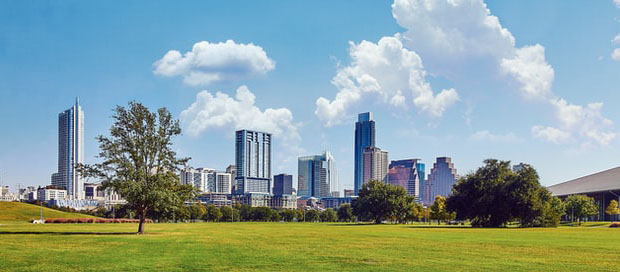
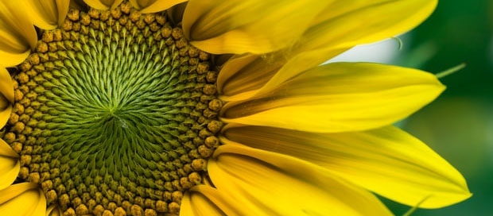

88서울올림픽의
정신과 가치를 계승 발전 하며,
시민들의 체육, 문화, 여가의 공간입니다.
올림픽공원은 지난 1984년 86아시안게임과 88서울올림픽대회 개최를 위해 43만여평의 대지 위에 착공, 1986년에 완공되었습니다. 공원 중심부에 몽촌토성이 복원되었고 이를 중심으로 6개의 경기장이 반원형으로 배치되어 있어 서울올림픽의 감동과 한성백제의 숨결이 살아 숨쉬는 도심 속의 공원으로 조성되어 있습니다.

선사문명과 화려한 백제문명을
꽃피웠던 터전이 자연과 인간이
공존하는 생태공원으로 변신했습니다.
오늘날 생태공원의 면모를 갖추기까지 올림픽 공원은 몇차례 거듭나기의 과정을 거쳤습니다. 과거 올림픽공원의 관리는 휴먼스케일을 벗어난 거대 기반 시설물에 대한 현상유지와 인위적 경관 관리에 역점을 두었으며, 이는 개장 초기 숲과 수환경이 충분히 조성되지 않아 여건상 생태복원 분야까지는 접근할 수 없었던 상황 때문이었습니다.
0